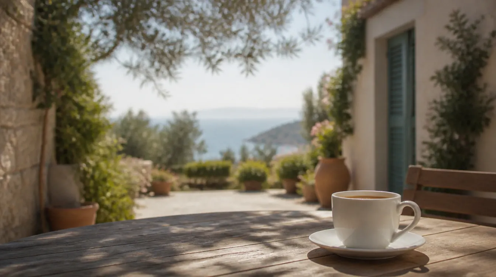
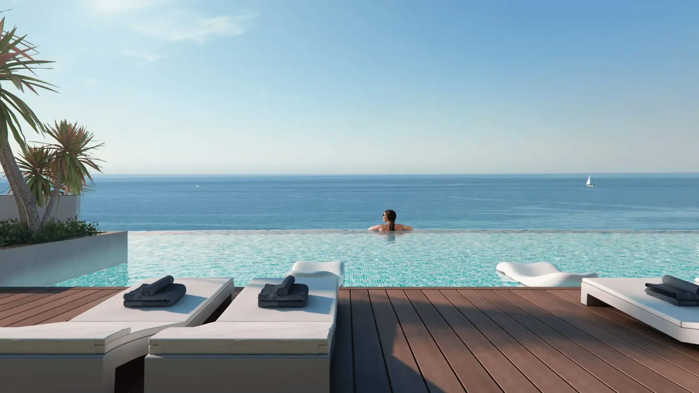
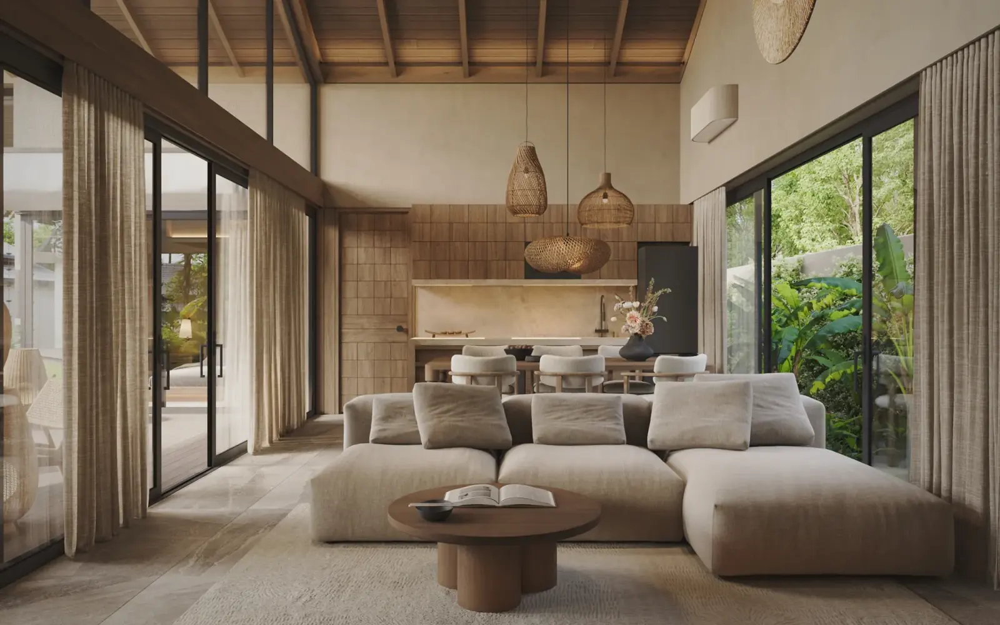
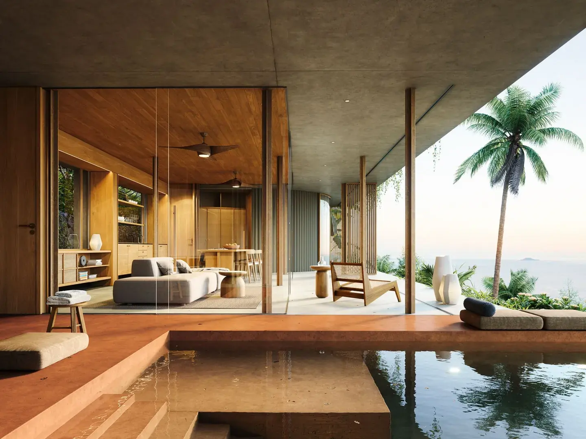
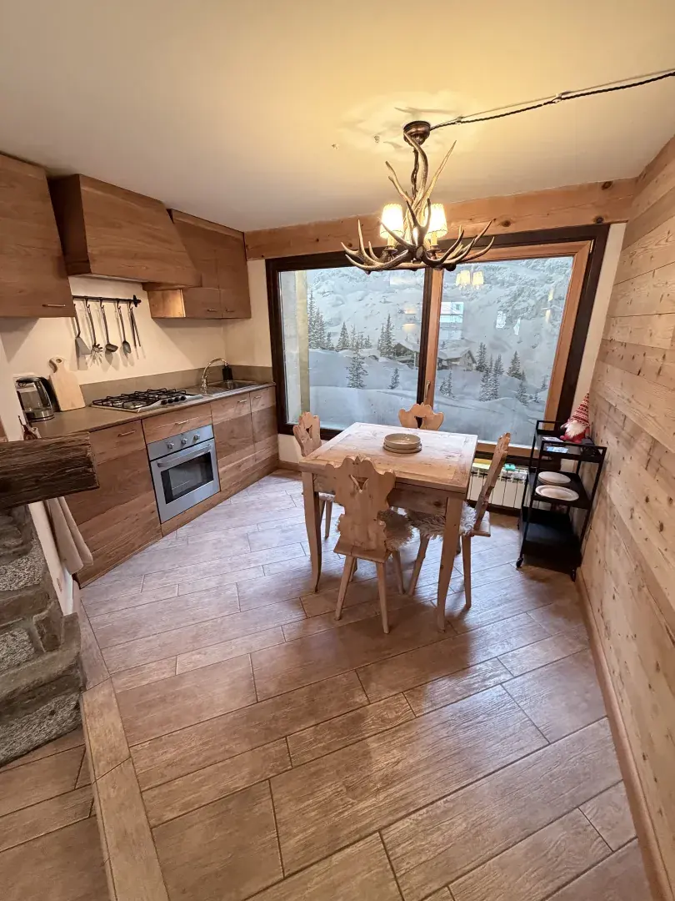
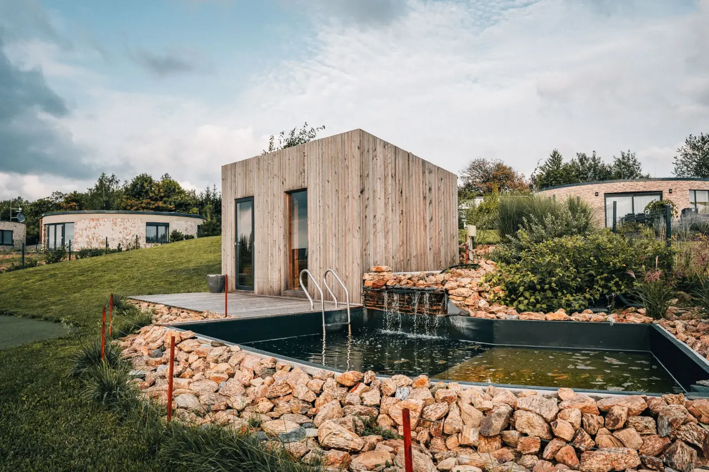

Fragmento Holiday
HostČlenem od [rok]
Za 1 € 1 bod
Brandmanuál · verze 1.0 · 27. 10. 2026
Pobytová podznačka Fragmenta, směr A „Zlatá hodinka“. Sdílí logo, písma a základ tokenů rodiče a mění náladu: teplé světlo, klid, celá cena bez překvapení. Všechny hodnoty na stránce jsou z tokens.css, kontrasty jsou změřené skriptem, ne odhadnuté.
Role. Fragmento je rodič, Holiday je pobytová část pro hosty. Mluví k hostovi, ne k majiteli.
Nosná myšlenka. Místa, která známe do detailu. Host nejede do neznáma, jede do nemovitosti, kterou má Fragmento za sebou celou: výběr, vybavení, úklid, příjezd.
Osobnost. Teplá, klidná, věcná, pozorná. Ne prodejní, ne hravá, ne luxusní na efekt.
Čím se Holiday nestane: slevovým e-shopem, hotelovým řetězcem, investičním webem ani sociální sítí o cestování.

Pobyt v nemovitostech, které známe do detailu.
Fotka v pozadí je AI nálada (hero bez konkrétní nemovitosti), proto nemá popisek a nikde se nevydává za nabídku.
Logo Fragmento ze šablony beze změny (logo-fragmento.svg, na tmavém logo-fragmento-light.svg). Vedle něj slovo HOLIDAY v DM Sans 600, verzálky, prostrkání 0,16em, oddělené svislou linkou 1 px. Cormorant se v lockupu nepoužívá.
--tm-1.Všechny míry se odvozují od výšky loga H (výška souboru SVG, viewBox 261 × 54):
--lockup-holiday).--lockup-zona).
Logo je vždy čitelné. Na fotce vždy světlá varianta, stín (.lockup.na-fotce) a tmavší přechod v horních 46 % fotky (.foto-hlava, krytí 0,62). Platí i na tmavé fotce, aby se logo nechovalo jinak podle snímku.
Text na fotce nese vlastní podklad (.scrim), nikdy nespoléhá na to, že je fotka tmavá.
Zděděno z Fragmenta, platí Gold Means Action: zlatá je jen Rezervovat a Zaplatit. Nově přibývá Broskev pro náladu a Mosaz pro věrnostní program. Vzorky ukazují aktuální režim, přepínač nahoře přepne na tmavý.
--bgPozadí stránek--bg-pasStřídavé sekce, filtry--kartaKarty, formuláře, panel--akcentTlačítka, aktivní chipy, odkazy--pPatička, tmavé pásy--textNadpisy a text--text-3Popisky, nápověda--linka-poleOkraj vstupů (3 : 1)--zlataJen Rezervovat a Zaplatit--zlaty-textKrátké štítky na světlém--naladaNálada, plochy, nikdy text--nalada-podkladPodklad karty pobytu--programBody, úroveň, razítko--program-podkladOdznak bodů--ok-tPotvrzení (text i ikona)--er-tChyby (text i ikona)Pravidla
Změřeno skriptem _nastroje/kontrast.py z hodnot v tokens.css (WCAG 2.2, relativní jas). Text potřebuje 4,5 : 1, obrysy a ikony 3 : 1. Skript tabulku vkládá sem a skončí chybou, když některá dvojice neprojde.
| Spojení | Min. | Světlý režim | Tmavý režim |
|---|---|---|---|
| Text na podkladu stránky--text na --bg | 4,50 | 15,95 : 1 ✓#1E1E1E / #FCFAF2 | 14,38 : 1 ✓#F2EFE6 / #16211E |
| Text na krémovém pásu--text na --bg-pas | 4,50 | 14,84 : 1 ✓#1E1E1E / #F8F1E4 | 13,30 : 1 ✓#F2EFE6 / #1A2824 |
| Text na kartě--text na --karta | 4,50 | 16,67 : 1 ✓#1E1E1E / #FFFFFF | 12,46 : 1 ✓#F2EFE6 / #1F2D29 |
| Delší text na kartě--text-2 na --karta | 4,50 | 12,63 : 1 ✓#333333 / #FFFFFF | 10,04 : 1 ✓#D6D9D2 / #1F2D29 |
| Delší text na pásu--text-2 na --bg-pas | 4,50 | 11,25 : 1 ✓#333333 / #F8F1E4 | 10,72 : 1 ✓#D6D9D2 / #1A2824 |
| Popisek na podkladu--text-3 na --bg | 4,50 | 4,93 : 1 ✓#6B6C7F / #FCFAF2 | 7,16 : 1 ✓#A3ADA8 / #16211E |
| Popisek na pásu--text-3 na --bg-pas | 4,50 | 4,59 : 1 ✓#6B6C7F / #F8F1E4 | 6,63 : 1 ✓#A3ADA8 / #1A2824 |
| Popisek na kartě--text-3 na --karta | 4,50 | 5,15 : 1 ✓#6B6C7F / #FFFFFF | 6,21 : 1 ✓#A3ADA8 / #1F2D29 |
| Odkaz / akcent na podkladu--akcent na --bg | 4,50 | 8,54 : 1 ✓#2F4F4F / #FCFAF2 | 8,73 : 1 ✓#A9C1C1 / #16211E |
| Odkaz / akcent na kartě--akcent na --karta | 4,50 | 8,93 : 1 ✓#2F4F4F / #FFFFFF | 7,56 : 1 ✓#A9C1C1 / #1F2D29 |
| Odkaz / akcent na pásu--akcent na --bg-pas | 4,50 | 7,95 : 1 ✓#2F4F4F / #F8F1E4 | 8,07 : 1 ✓#A9C1C1 / #1A2824 |
| Zlatý štítek na podkladu--zlaty-text na --bg | 4,50 | 4,90 : 1 ✓#836A40 / #FCFAF2 | 11,68 : 1 ✓#E8D7B7 / #16211E |
| Zlatý štítek na pásu--zlaty-text na --bg-pas | 4,50 | 4,56 : 1 ✓#836A40 / #F8F1E4 | 10,81 : 1 ✓#E8D7B7 / #1A2824 |
| Zlatý štítek na kartě--zlaty-text na --karta | 4,50 | 5,12 : 1 ✓#836A40 / #FFFFFF | 10,12 : 1 ✓#E8D7B7 / #1F2D29 |
| Mosaz (body, úroveň) na kartě--program na --karta | 4,50 | 5,88 : 1 ✓#716433 / #FFFFFF | 7,29 : 1 ✓#BFBB88 / #1F2D29 |
| Mosaz na podkladu--program na --bg | 4,50 | 5,62 : 1 ✓#716433 / #FCFAF2 | 8,41 : 1 ✓#BFBB88 / #16211E |
| Mosaz na pásu--program na --bg-pas | 4,50 | 5,23 : 1 ✓#716433 / #F8F1E4 | 7,78 : 1 ✓#BFBB88 / #1A2824 |
| Mosaz na podkladu odznaku--program na --program-podklad | 4,50 | 5,19 : 1 ✓#716433 / #F4F1E4 | 7,05 : 1 ✓#BFBB88 / #2A2E24 |
| Text na podkladu odznaku--text na --program-podklad | 4,50 | 14,73 : 1 ✓#1E1E1E / #F4F1E4 | 12,06 : 1 ✓#F2EFE6 / #2A2E24 |
| Mosaz na broskvovém podkladu--program na --nalada-podklad | 4,50 | 5,20 : 1 ✓#716433 / #FBEFE6 | 6,83 : 1 ✓#BFBB88 / #3A2C22 |
| Text na broskvovém podkladu--text na --nalada-podklad | 4,50 | 14,76 : 1 ✓#1E1E1E / #FBEFE6 | 11,68 : 1 ✓#F2EFE6 / #3A2C22 |
| Popisek na broskvovém podkladu--text-3 na --nalada-podklad | 4,50 | 4,56 : 1 ✓#6B6C7F / #FBEFE6 | 5,82 : 1 ✓#A3ADA8 / #3A2C22 |
| Akcent na broskvovém podkladu--akcent na --nalada-podklad | 4,50 | 7,90 : 1 ✓#2F4F4F / #FBEFE6 | 7,09 : 1 ✓#A9C1C1 / #3A2C22 |
| Inkoust na Broskvi (plocha)--na-nalade na --nalada | 4,50 | 8,04 : 1 ✓#1E1E1E / #E9A57A | 8,04 : 1 ✓#1E1E1E / #E9A57A |
| Tlačítko hlavní--na-akcentu na --akcent | 4,50 | 8,93 : 1 ✓#FFFFFF / #2F4F4F | 8,73 : 1 ✓#16211E / #A9C1C1 |
| Tlačítko hlavní, hover--na-akcentu na --akcent-hover | 4,50 | 11,41 : 1 ✓#FFFFFF / #263E3E | 11,25 : 1 ✓#16211E / #C9D8D8 |
| Tlačítko zlaté (Rezervovat, Zaplatit)--na-zlate na --zlata | 4,50 | 8,08 : 1 ✓#241B08 / #CDAF75 | 8,08 : 1 ✓#241B08 / #CDAF75 |
| Tlačítko zlaté, hover--na-zlate na --zlata-hover | 4,50 | 4,84 : 1 ✓#241B08 / #A38452 | 4,84 : 1 ✓#241B08 / #A38452 |
| Chip zapnutý--na-akcentu na --akcent | 4,50 | 8,93 : 1 ✓#FFFFFF / #2F4F4F | 8,73 : 1 ✓#16211E / #A9C1C1 |
| Úspěch: text na podkladu hlášky--ok-t na --ok-bg | 4,50 | 6,48 : 1 ✓#166534 / #EEF6F0 | 7,90 : 1 ✓#8FD4A3 / #1C3226 |
| Úspěch: text na kartě--ok-t na --karta | 4,50 | 7,13 : 1 ✓#166534 / #FFFFFF | 8,27 : 1 ✓#8FD4A3 / #1F2D29 |
| Čeká: text na podkladu hlášky--ceka-t na --ceka-bg | 4,50 | 7,91 : 1 ✓#2F4F4F / #EEF2F1 | 7,00 : 1 ✓#A9C1C1 / #22332F |
| Chyba: text na podkladu hlášky--er-t na --er-bg | 4,50 | 5,99 : 1 ✓#B02020 / #FBEDEB | 11,27 : 1 ✓#FFD9D2 / #3A2220 |
| Chyba: hláška pod polem na kartě--er-t na --karta | 4,50 | 6,83 : 1 ✓#B02020 / #FFFFFF | 10,99 : 1 ✓#FFD9D2 / #1F2D29 |
| Text v hlášce na podkladu úspěchu--text na --ok-bg | 4,50 | 15,14 : 1 ✓#1E1E1E / #EEF6F0 | 11,91 : 1 ✓#F2EFE6 / #1C3226 |
| Text v hlášce na podkladu chyby--text na --er-bg | 4,50 | 14,62 : 1 ✓#1E1E1E / #FBEDEB | 12,78 : 1 ✓#F2EFE6 / #3A2220 |
| Text v hlášce na podkladu čeká--text na --ceka-bg | 4,50 | 14,77 : 1 ✓#1E1E1E / #EEF2F1 | 11,54 : 1 ✓#F2EFE6 / #22332F |
| Obrys pole na kartě--linka-pole na --karta | 3,00 | 3,62 : 1 ✓#85868F / #FFFFFF | 4,37 : 1 ✓#8C8D9C / #1F2D29 |
| Obrys pole na podkladu--linka-pole na --bg | 3,00 | 3,46 : 1 ✓#85868F / #FCFAF2 | 5,04 : 1 ✓#8C8D9C / #16211E |
| Fokus na podkladu--fokus na --bg | 3,00 | 8,54 : 1 ✓#2F4F4F / #FCFAF2 | 11,68 : 1 ✓#E8D7B7 / #16211E |
| Fokus na kartě--fokus na --karta | 3,00 | 8,93 : 1 ✓#2F4F4F / #FFFFFF | 10,12 : 1 ✓#E8D7B7 / #1F2D29 |
| Ikona bodů (Mosaz) na kartě--program na --karta | 3,00 | 5,88 : 1 ✓#716433 / #FFFFFF | 7,29 : 1 ✓#BFBB88 / #1F2D29 |
| Chyba: obrys pole na kartě--er-t na --karta | 3,00 | 6,83 : 1 ✓#B02020 / #FFFFFF | 10,99 : 1 ✓#FFD9D2 / #1F2D29 |
Text na fotografii (oba režimy stejně): závoj --zavoj s krytím .88 nad bílou, nejhorší možnou fotkou: --tm-1 11,89 : 1, --tm-2 9,60 : 1, --tm-3 8,24 : 1, --tm-4 7,06 : 1, --tm-5 5,93 : 1.
DM Sans nese rozhraní, Cormorant Garamond je jen hlas: claim v hero, citát hosta, jméno úrovně. Nikdy v tlačítku, čísle ani formuláři. Stupnice má devět stupňů, nic mezi nimi.
clamp(40px, 8vw, 76px)Místa, která známe do detailu
clamp(32px, 5.5vw, 48px)Pobyty u moře
Co je v ceně
Vaše údaje
Apartina, apartmán 3+kk
Rezervujte přímo od nás. Cena je celková a žádné příplatky nepřijdou.
Mezi pobyty uklízíme a před vaším příjezdem nemovitost zkontrolujeme. Pokyny k příjezdu pošleme e-mailem tři dny předem.
Úklid a poplatky v ceně
Chorvatsko · Zadar
tabular-nums, nezalomitelná mezera před jednotkou[X] € · [X] bodů
Zlatá hodina, teplé světlo, široké záběry místa a stopy po pobytu. Skutečné fotky z katalogu u konkrétních nabídek, žádné fotky obchodníků, lidé jen zezadu nebo v siluetě. Deset výřezů níže je z deseti různých nemovitostí, žádná se neopakuje.









Ano
Ne
Osobně, ne familiérně: vykání v CZ, neutrální you v EN. Angličtina se píše zvlášť podle stejné osnovy, ne překladem, a je o 20 až 30 % delší, proto se každá komponenta testuje i v EN.
| Místo | CZ | EN |
|---|---|---|
| Hero | Pobyt v nemovitostech, které známe do detailu. | Stay in places we know inside out. |
| Podtitul | Rezervujte přímo od nás. Cena je celková a žádné příplatky nepřijdou. | Book direct with us. The price you see is the price you pay. |
| Hledání | Zobrazit volné termíny | See available dates |
| Rezervace | Rezervovat ne „Rezervovat teď“ | Reserve |
| Cena | [X] € za pobyt, vše v ceně | [X] € for the stay, all in |
| Body na detailu | Za tento pobyt získáte [X] bodů (≈ [Y] €). Použijete je na další pobyt. | You’ll earn [X] points (≈ [Y] €) for this stay, to use on your next one. |
| Postup | Ještě jeden pobyt do úrovně Stálý host. | One more stay to reach Regular. |
| Expirace | [X] bodů vyprší [datum]. Použijete je při platbě dalšího pobytu. | [X] points expire on [date]. Use them when you pay for your next stay. |
| Storno | Do [N] dnů před příjezdem zrušíte zdarma. Později vracíme [X] %. | Cancel free up to [N] days before arrival. After that we refund [X] %. |
| Selhala platba | Platba neprošla. Karta nebyla zatížena, termín držíme ještě [X] minut. | The payment didn’t go through. Your card wasn’t charged, and we’re holding the dates for [X] more minutes. |
| Prázdný účet | Zatím tu nic není. První pobyt vám tu založí body. | Nothing here yet. Your first stay starts your points. |
| Místo psaní | Nepsat | Psát |
|---|---|---|
| Karta | Luxusní dům u moře | Apartmán 3+kk s terasou u moře |
| Termín | Poslední volný termín! | Volné termíny v listopadu |
| Body | Získejte zlatý status | Za pobyt získáte [X] bodů (≈ [Y] €) |
| Rezervace | Výnos z pobytu, podíl 1/8 | nic, patří na fragmento.cz |
Členství, ne slevy. Body: 1 bod za 1 € útraty, 100 bodů = 3 €, hodnota v eurech je u bodů vždy. Úrovně Host (1 dokončený pobyt a registrace, ×1), Stálý host (3 pobyty za 24 měsíců, ×1,5), Domácí (5 a více, ×2). Ve fázi 1 se ukazuje jen Host, ostatní komponenty jsou hotové a vypnuté (.is-phase2, data-phase="2"). Tady jsou vidět všechny.
HostČlenem od [rok]
Stálý host3 pobyty za 24 měsíců
Domácí5 a více pobytů za 24 měsíců
Karta úrovně má poměr platební karty (1,586), krémový podklad, vnitřní linku v Mosazi a tečky stupně, takže se úroveň pozná i bez barvy. Jméno úrovně je jediné místo v produktu, kde Cormorant stojí mimo hero.
Ještě jeden pobyt do úrovně Stálý host.
Ve fázi 1 místo něj jen věta „Další úrovně připravujeme.“
[X] bodů
≈ [Y] € na další pobyt
[X] bodů vyprší [datum].
100 bodů = 3 €
Zakázáno: kolo štěstí, odznaky za klikání, medaile, koruny, ohně, odpočty, počítání čísla nahoru, konfety, stupnice „bronz, stříbro, zlato“.
Tlačítka, chipy, vstupy a fokus jsou zděděné z Fragmenta, zaoblení 9 až 16 px. Celá živá knihovna se všemi stavy je v components.html.
Telefon potřebujeme celý, ať se dovoláme.
ChorvatskoRtina-Ražanac, Zadar
[datum]–[datum] · [N] nocí
[X] € za pobyt, vše v ceně
Za pobyt získáte [X] bodů (≈ [Y] €)
| Token | Hodnota | Použití |
|---|---|---|
--r-xs / --r-sm | 3 / 8 px | štítek Ukázka, miniatury, dny kalendáře |
--r-control | 9 px | tlačítka, vstupy, přepínače |
--r / --r-lg | 12 / 16 px | karty, panel / plochy fotek, ukázky |
--r-pill | 99 px | chipy, odznak bodů |
--m-1 až --m-10 | 4, 8, 12, 16, 20, 24, 32, 40, 64, 88 px | mezery; nic mezi stupni |
--cil | 44 px | nejmenší cíl klepnutí |
--stin-karta, -hover, -popover, -lista | měkké zelené stíny, v tmavém černé | karta, karta pod myší, kalendář, spodní lišta |
Střídmý. Jedna orchestrovaná chvíle na stránce (vyjetí nadpisu v hero), jinak jen přechody kroků, měsíců kalendáře a stavů ovládání. Při prefers-reduced-motion mají všechny délky hodnotu 0 a lesk kostry stojí. Žádné konfety ani animace bodů.
| Token | Délka | Kde |
|---|---|---|
--d-1 | 160 ms | chip, změna barvy |
--d-2 | 180 ms | tlačítko, karta pod myší |
--d-3 | 320 ms | krok rezervace, měsíc kalendáře |
--d-4 | 700 ms | vyjetí nadpisu hero, jednou |
--ease | cubic-bezier(.16, 1, .3, 1), rychlý start, dlouhý doběh | |
--fokus s odsazením 2 px, viditelný na světlém i tmavém.--cil), den kalendáře 47 px i na 375 px.role="status", chyba role="alert".Každá hodnota z tokens.css. Tabulky generuje _nastroje/export_tokeny.py spolu s tokens.json, takže se s tokeny nerozejdou. Mimo tento seznam se v produktu žádná barva, velikost ani délka nepoužívá.
| Token | Hodnota |
|---|---|
--p | #2F4F4F |
--p600 | #263E3E |
--p400 | #567373 |
--p300 | #809999 |
--p200 | #A9C1C1 |
--s | #CDAF75 |
--s600 | #A38452 |
--s700 | #836A40 |
--s200 | #E8D7B7 |
--s150 | #F8F1E4 |
--s50 | #FCFAF2 |
--n50 | #F5F5F5 |
--n100 | #EFEFEF |
--n150 | #DADADA |
--n200 | #6B6C7F |
--n700 | #333333 |
--n900 | #1E1E1E |
--ok | #16A34A |
--er | #B02020 |
--plocha | #fff |
--na-zlate | #241B08 |
--jt-podklad | #16211E |
--er-na-tmavem | #FFD9D2 |
--er-linka-na-tmavem | #FFB4A6 |
--tm-1 | #fff |
--tm-2 | rgba(255,255,255,.88) |
--tm-3 | rgba(255,255,255,.8) |
--tm-4 | rgba(255,255,255,.72) |
--tm-5 | rgba(255,255,255,.64) |
--tm-linka-1 | rgba(255,255,255,.12) |
--tm-linka-2 | rgba(255,255,255,.18) |
--tm-linka-3 | rgba(255,255,255,.26) |
--tm-linka-4 | rgba(255,255,255,.5) |
--tm-plocha-1 | rgba(255,255,255,.06) |
--tm-plocha-2 | rgba(255,255,255,.12) |
--tm-plocha-3 | rgba(255,255,255,.24) |
--plocha-sklo | rgba(255,255,255,.94) |
--zavoj | 20 30 28 |
--zavoj-hluboky | 8 16 14 |
--p-rgb | 47 79 79 |
--broskev | #E9A57A |
--broskev-200 | #FBEFE6 |
--broskev-tma | #3A2C22 |
--mosaz | #716433 |
--mosaz-200 | #F4F1E4 |
--mosaz-svetla | #BFBB88 |
--mosaz-tma | #2A2E24 |
--ok-text | #166534 |
--ok-podklad | #EEF6F0 |
--er-podklad | #FBEDEB |
--ceka-podklad | #EEF2F1 |
--tma-pas | #1A2824 |
--tma-karta | #1F2D29 |
--tma-karta-2 | #26362F |
--tma-text | #F2EFE6 |
--tma-text-2 | #D6D9D2 |
--tma-text-3 | #A3ADA8 |
--tma-linka | #33443F |
--tma-linka-pole | #8C8D9C |
--tma-akcent-hover | #C9D8D8 |
--tma-ok | #8FD4A3 |
--tma-ok-podklad | #1C3226 |
--tma-er-podklad | #3A2220 |
--tma-ceka-podklad | #22332F |
--pole-obrys | #85868F |
| Token | Hodnota |
|---|---|
--sans | "DM Sans", ui-sans-serif, system-ui, sans-serif |
--serif | "Cormorant Garamond", Georgia, serif |
--t1 | 12px |
--t2 | 13.5px |
--t3 | 15px |
--t4 | 17px |
--t5 | 21px |
--t6 | clamp(23px, 3.4vw, 28px) |
--t7 | clamp(26px, 4.4vw, 36px) |
--t8 | clamp(32px, 5.5vw, 48px) |
--t9 | clamp(40px, 8vw, 76px) |
--w-text | 400 |
--w-med | 600 |
--w-bold | 750 |
--lh-display | 1.03 |
--lh-nadpis | 1.18 |
--lh-titulek | 1.25 |
--lh-hlas | 1.42 |
--lh-text | 1.62 |
--tr-display | -.015em |
--tr-nadpis | -.025em |
--tr-titulek | -.017em |
--tr-stitek | .16em |
--tr-chip | .07em |
| Token | Hodnota |
|---|---|
--r-xs | 3px |
--r-sm | 8px |
--r-control | 9px |
--r | 12px |
--r-lg | 16px |
--r-pill | 99px |
| Token | Hodnota |
|---|---|
--m-1 | 4px |
--m-2 | 8px |
--m-3 | 12px |
--m-4 | 16px |
--m-5 | 20px |
--m-6 | 24px |
--m-7 | 32px |
--m-8 | 40px |
--m-9 | 64px |
--m-10 | 88px |
--wrap | min(94vw, 1720px) |
--pad | 20px |
--cil | 44px |
| Token | Hodnota |
|---|---|
--stin-karta | 0 6px 22px rgba(15,30,28,.08) |
--stin-karta-hover | 0 14px 34px rgba(15,30,28,.13) |
--stin-poptavka | 0 16px 42px rgba(38,62,62,.22) |
--stin-chip | 0 2px 8px rgba(20,30,28,.16) |
--stin-popover | 0 18px 44px rgba(15,30,28,.18), 0 0 0 1px rgba(15,30,28,.06) |
--stin-lista | 0 -8px 24px rgba(15,30,28,.10) |
| Token | Hodnota |
|---|---|
--ease | cubic-bezier(.16, 1, .3, 1) |
--d-1 | .16s |
--d-2 | .18s |
--d-3 | .32s |
--d-4 | .7s |
| Token | Hodnota |
|---|---|
--lockup-holiday | .345 |
--lockup-zona | .44 |
| Role | Světlý | Tmavý |
|---|---|---|
--bg | var(--s50) | var(--jt-podklad) |
--bg-pas | var(--s150) | var(--tma-pas) |
--karta | var(--plocha) | var(--tma-karta) |
--karta-2 | var(--n50) | var(--tma-karta-2) |
--text | var(--n900) | var(--tma-text) |
--text-2 | var(--n700) | var(--tma-text-2) |
--text-3 | var(--n200) | var(--tma-text-3) |
--linka | var(--n150) | var(--tma-linka) |
--linka-jemna | var(--n100) | var(--tma-karta-2) |
--linka-zavoj | var(--s200) | var(--tma-linka) |
--linka-pole | var(--pole-obrys) | var(--tma-linka-pole) |
--akcent | var(--p) | var(--p200) |
--akcent-hover | var(--p600) | var(--tma-akcent-hover) |
--na-akcentu | var(--tm-1) | var(--jt-podklad) |
--zlata | var(--s) | var(--s) |
--zlata-hover | var(--s600) | var(--s600) |
--zlaty-text | var(--s700) | var(--s200) |
--program | var(--mosaz) | var(--mosaz-svetla) |
--program-podklad | var(--mosaz-200) | var(--mosaz-tma) |
--nalada | var(--broskev) | var(--broskev) |
--nalada-podklad | var(--broskev-200) | var(--broskev-tma) |
--na-nalade | var(--n900) | var(--n900) |
--ok-t | var(--ok-text) | var(--tma-ok) |
--ok-bg | var(--ok-podklad) | var(--tma-ok-podklad) |
--er-t | var(--er) | var(--er-na-tmavem) |
--er-bg | var(--er-podklad) | var(--tma-er-podklad) |
--ceka-t | var(--p) | var(--p200) |
--ceka-bg | var(--ceka-podklad) | var(--tma-ceka-podklad) |
--fokus | var(--p) | var(--s200) |
--kostra | var(--n100) | var(--tma-karta-2) |
Co se změnilo proti fragmento-holiday-brandmanual.md a proč. Podrobně v rozdily-proti-fragmentu.md.
| Co | Návrh v1 | Teď | Proč |
|---|---|---|---|
| Mosaz | #A38452 | #716433, v tmavém #BFBB88 | Původní hex je přesně hover zlatého tlačítka (splývá s „jednáním“) a na krému má jen 3,13 : 1. Olivová mosaz má 4,78 až 5,88 : 1 a od zlaté se zřetelně liší. |
| Broskev | #E9A57A | beze změny, k ní jemná #FBEFE6 | Jako plocha funguje, jako text by neprošla nikdy (2,0 : 1). Zůstává jen nálada a podklad, na podkladu prochází i tlumený text (4,56 : 1). |
| Hover zlatého tlačítka | bílý text na #A38452 | inkoust na zlatě | Bílá má 3,51 : 1, inkoust 4,84 : 1. |
| Zelená jako text | #16A34A | #166534 pro text | Původní má na bílé 3,30 : 1. Světlá zelená zůstává pro ikony. |
| Obrys vstupů | #DADADA ze šablony | #85868F | Původní má asi 1,4 : 1, WCAG 1.4.11 chce 3 : 1. |
| Tmavý režim | jen podklad a text | úplná sada rolí | Karty, linky, stavy, Mosaz a fokus mají vlastní hodnoty, všechny změřené. |
| Lockup | „doplní grafik“ | HOLIDAY 0,345 H, linka, zóna 0,44 H, min. 32 / 40 px | Odvozeno z geometrie SVG, ať je lockup stejný všude. |
| Mezery a pohyb | slovně | tokeny --m-*, --d-* | Ostatní session staví na stejných číslech. |
| Stavové hlášky | (neřešeno) | celý obrys 1 px | Proužek vlevo je opotřebovaný vzor. Stav nese ikona a věta. |
David Skoupý schválil 27. 10. 2026 Mosaz #716433 (tmavý režim #BFBB88), lockup (HOLIDAY 0,345 H, zóna 0,44 H, minimum 32 px na webu a 40 px v e-mailu) a sadu tmavého režimu. Další změny tokenů jdou přes novou verzi brandmanuálu.